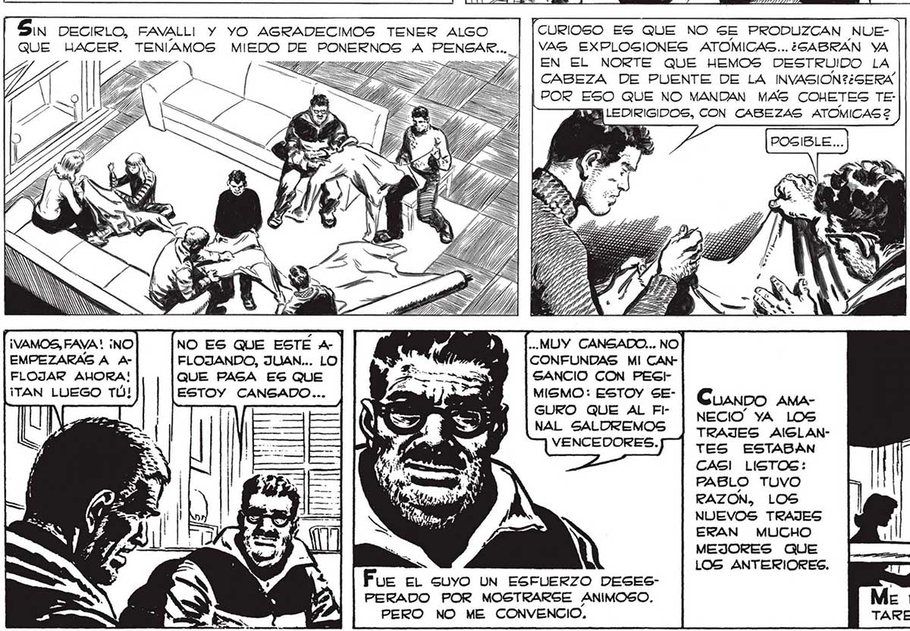
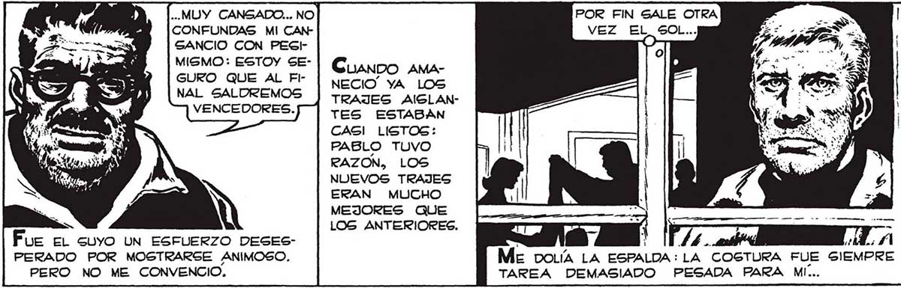

312 AD! ZO UY E a e Covo SIEMPRE, HUBO EN FAYALLI PALABRAS DE ANIMO, DE RESOLUCION. PERO NO ME ENGANO: SU ENERGIA SONABA A HUECO. ¡VAMOS, FAVA ! ¡NO EMPEZARASG A AFLOJAR AHORA! ¡TAN LUEGO TÚ! NO ES QUE ESTÉ Ar | FLOJANDO, JUAN... LO QUE PAGA ES QUE ESTOY CANGADO... ES y FT MAY QUE SE L- |DO..YA HICIL-— MOS TANTO... NO NOS ENTENEMOS QUE PONERNOS A FABRI- VIENE BIEN QUE HAYAMOS PERDIDO LOS CAR AHORA MISMO TRAJES AISLAN- TRAJES ANTERIORES: LOS NUEVOS NOS TES..EN EL ALTILLO HAY ENS, SALDRAN MEJOR. E MATERIAL DE SOBRA. EA, y Fue RECONFORTANTE OÍR A PABLO Y A FRANCO: LA ENERGÍA DEL CHICO Y DEL TORNERO SÍ QUE NO HABRÁN CREÍDO QUE LA EXPLOSION DES"CURIOSO ES QUE NO SE PRODUZCAN NUETRUYO LA CABEZA DE PUENTE... VAG EXPLOSIONES ATOMICAS...¿SABRAN YA EN EL NORTE QUE HEMOS DESTRUIDO LA CABEZA DE PUENTE DE LA INVASION?¿GERA POR ESO QUE NO MANDAN MAS COHETES TE: LEDIRIGIDOS, CON CABEZAS ATOMICAS 2 SIDA Y GT s ” A IN ..MUY CANSADO... NO POR FIN SALE OTRA CONFUNDAS MI CAN- VEZ EL GOl GANCIO CON PEGI- O MISMO: ESTOY SEGURO QUE AL FlNAL SALDREMOS VENCEDORES. NECIO” YA LOS TRAJES AISLANTES ESTABAN CASI LISTOS: PABLO TUVO RAZON, LOS NUEVOS TRAJES ERAN MUCHO IN MEJORES QUE LOS ANTERIORES. Fue el suyo UN ESFUERZO DESES- | ) 114L.. PERADO POR MOSTRARSE ANIMOSO. Me DOLÍA LA ESPALDA: LA COSTURA FUE SIEMPRE PERO NO ME CONVENCIO. TAREA DEMASIADO PESADA PARA MI...

